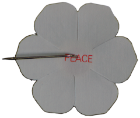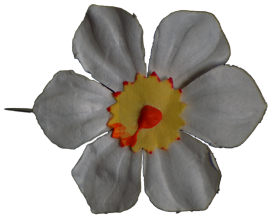
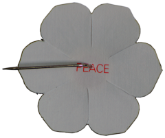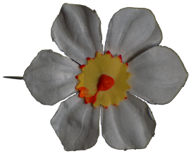 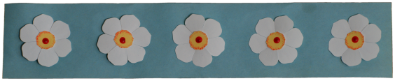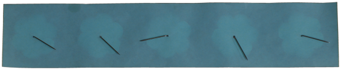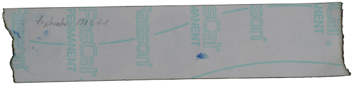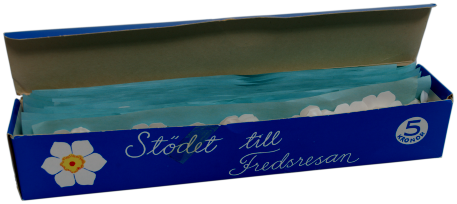
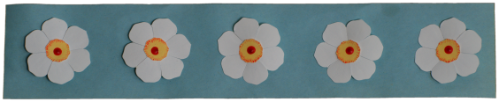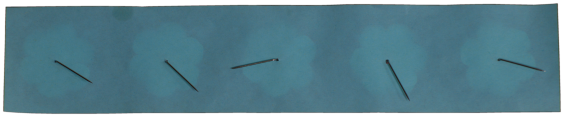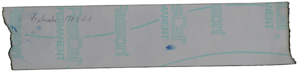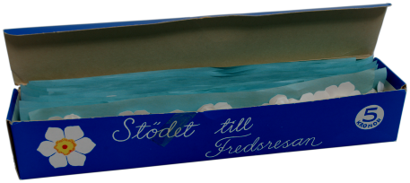 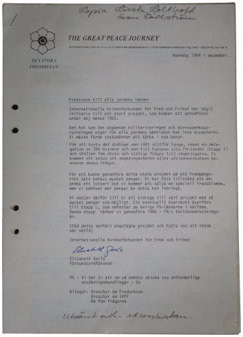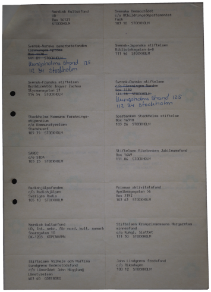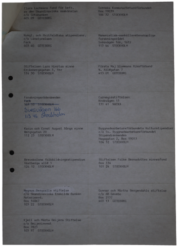
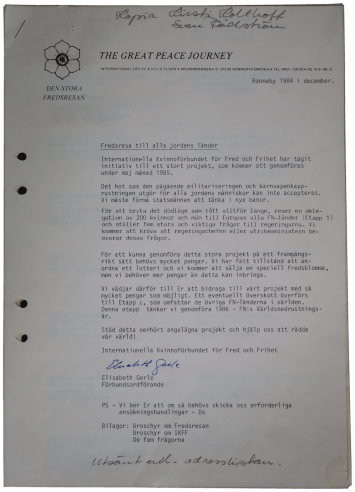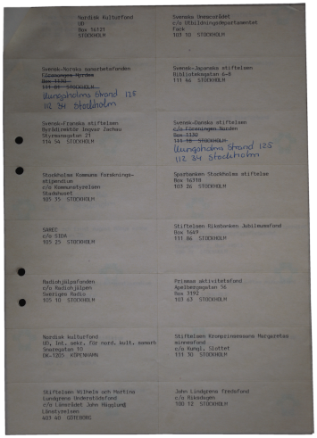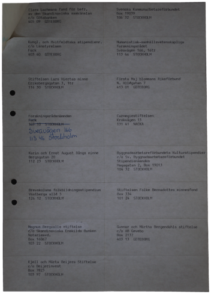 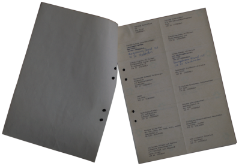
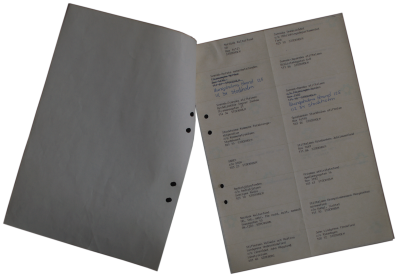 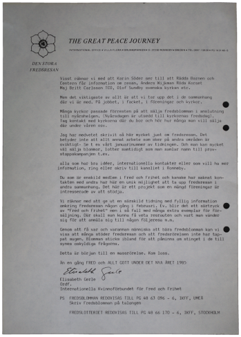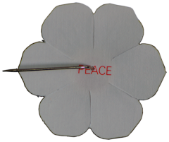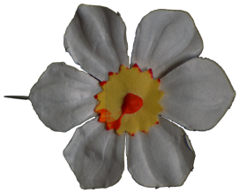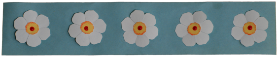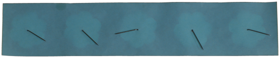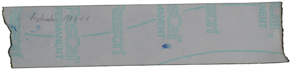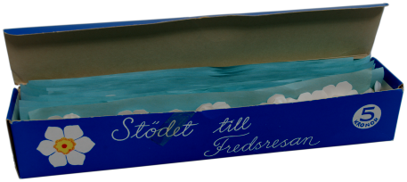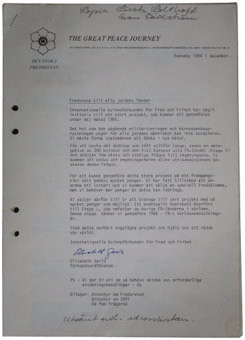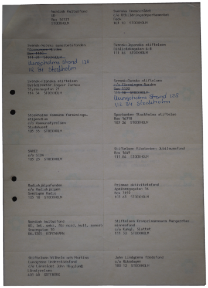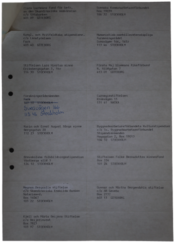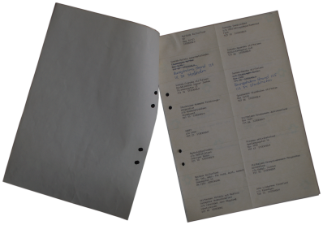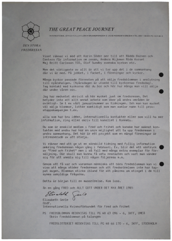
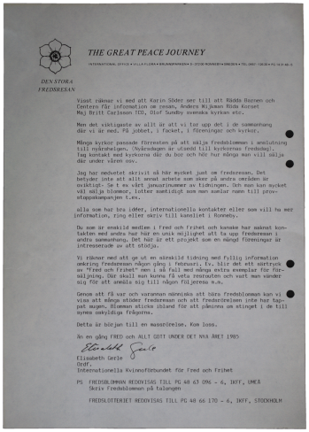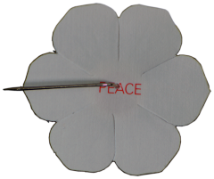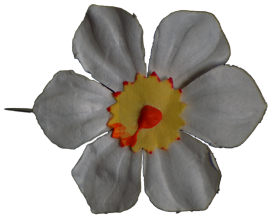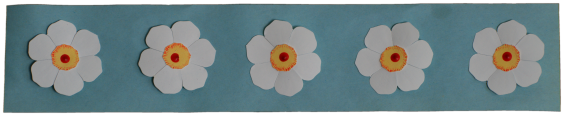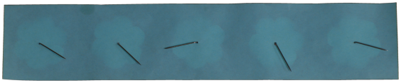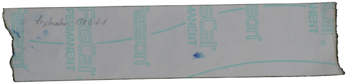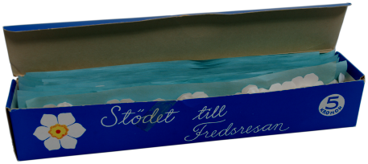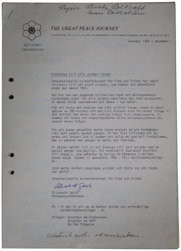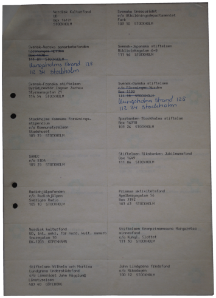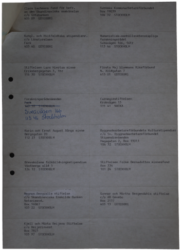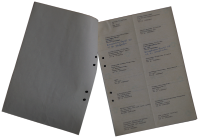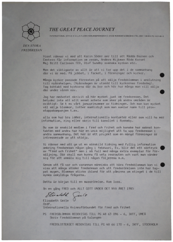Description: This project digitises a sample of objects and documents realted to "The Great Peace Journey/ Den Stora Fredsresan, organised by Internationalla Kvinnnoförbundet för Fred och Frihet in 1985 and 1986. This action, initiated by the Swedish branch of The Women's International League for Peace and Freedom, involved delegations made up of women from different nationalities and continents visiting all UN member governments to ask them five questions about peace and disarmament. ( IKFF.se) . Items digitised in this collection include: A Poster advertising The Great Peace Journey Flower pins sold as part of fundraising activities for The Great Peace Journey, and realted objects A fundraisng letter sent to various commercial and charitable organisations as part of the fundraising campaign for "The Great Peace Journey" A Newsletter sent to members of the IKFF regarding "The Great Peace Journey" and potential fundraising activities.
Author:
Internationella Kvinnoförbundet för Fred och Frihet (IKFF)
Transcription by:
Sonia Karla, Johannes Hagsér, Laura Routledge